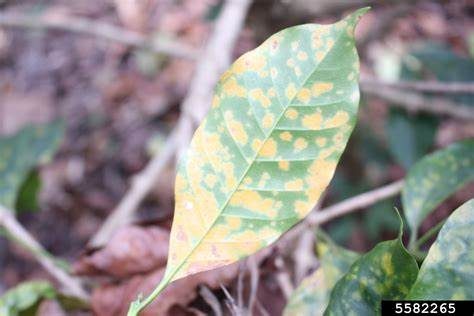
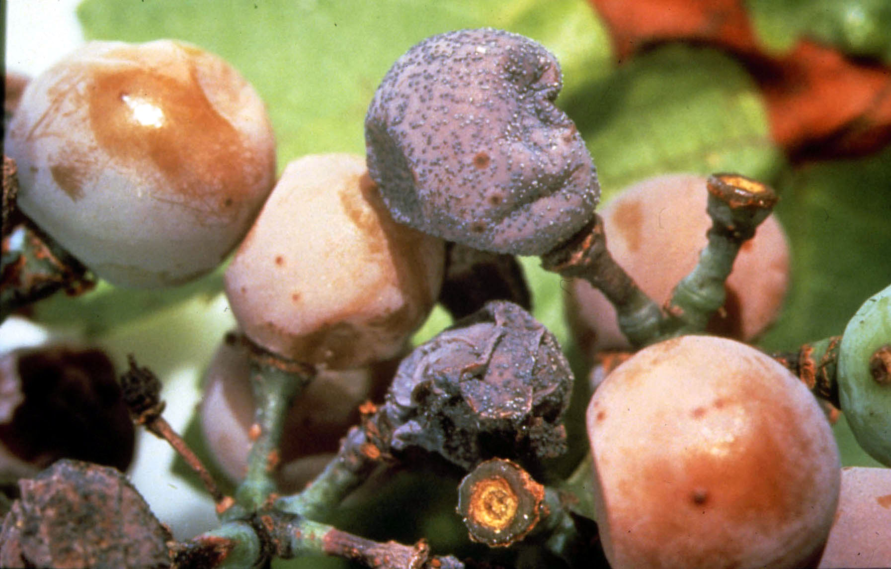

Fertilizer Recommended For Coffee
Coffee leaf rust - Hemileia vastatrix

Symptoms
Small pale-yellow spots on the lower surface of infected leaves, orange-yellow spore
mass appears, defoliation and die-back. Results in serious crop
loss and causes fluctuations in
production.
Pathogen
The mycelium is intercellular and sends haustoria into the cells. The mycelium sends out
erumpent stalks through stomata which bear the uredospores. The uredospores are reniform or
orange segment like in shape. The convex side of the spores are echinulated and the lower side is
smooth and measure 26 – 40 x 20 – 30 micron meter. The telial stage succeeds the uredial stage
in the later stage.
Disease Cycle
Mode of spread and survival
One lesion produces 1.5 lakhs uredospores which are spread by rain splash and wind.
Many animals (insects, birds etc.,) can also carry spores over long distances. Infection requires
the presence of water for uredospores germination and only occurs through stomata, which are
on the underside of the leaf.
Management
Three applications of 0.5% Bordeaux mixture for susceptible varieties.
Black rot (koleroga roxia)
Economic Importance
In India it occurs in Karnataka and Tamil Nadu. In south India the disease is severe only c
in those areas growing with C. arabica. It is influenced by south west monsoon period from June – Sep.
Symptoms

Blackening and rotting of affected leaves, young twigs and berries. Affected leaves get
detached and hang down by means of slimy fungal strands. Defoliation and berry drop occur.
Pathogen
The hyphae are hyaline when young and turn light brown with age. Fructifications arise
with numerous basidia and basidiospores. Basidia are simple, oval rounded or pyriform.
Basidiospores are hyaline, elongated, rounded at one end, slightly concave on one side. At a later
stage the fungus forms sclerotia or hyphal clumps by repeated branching of short cells.
Mode of spread and survival
The pathogen penetrates the leaves through the stomata on the lower side and the hyphae
invade intercellularly in the palisade tissue. The fungus mostly spreads by contact from leaf to
leaf through the vegetative mycelium. The pathogen spread through infected plant debris.
Mycelium lies in twigs throughout year.
Management
Remove and burn affected parts. Apply 1% Bordeaux mixture close to the south westerly
monsoon if needed. Centre the coffee bushes, regulate the overhead canopy.
Berry blotch
Symptoms
Necrotic spots on the exposed surface of green berries enlarge and cover the
major portion. Fruit skin shrivels and sticks fast.
Pathogen
Cercospora coffeicola conidiophores are short, fasiculate and olivaceous. Conidia are
subcylindrical, hyaline, 2-3 septate and 40-60x 3.5 micron meter in size.
Mode of spread and Survival
The pathogen is seed borne and conidia are spread by wind.
Management
Spray 1% Bordeaux mixture during june and late august, maintain medium shade
overhead.
Damping off / Collar rot – Rhizocotonia solani
Symptoms
It caused pre emergence damping off and post
emergence damping off. In post emergence damping off
collar region near soil level is infected leading the rotting of
tissue and death of seedlings.
Mode of spread and survival
The disease is soil borne
Management
Soil drenching with Copper oxychloride 0.25%.
Die back or Anthranose – Collectorichum coffeanum
Symptoms
On leaves circular to grayish spots of 2-3 m in dia. On berries small dark coloured sunken
spots are farmed. Beans become brown. Die back also occurs.
Mode of spread and survival
The fungus occurs as a saprophyte on dead tissue on the outer layer of the bark, which
provides the major source of inoculum. It release large numbers of water borne conidia during
the wet season. Conidia are spread by rain water percolating through the canopy and rain splash
can disperse conidia between trees.
Long distance dispersal occurs primarily by the carriage of
conidia on passive vectors such as birds, machinery etc.
Management
Spraying Mancozeb 0.25%